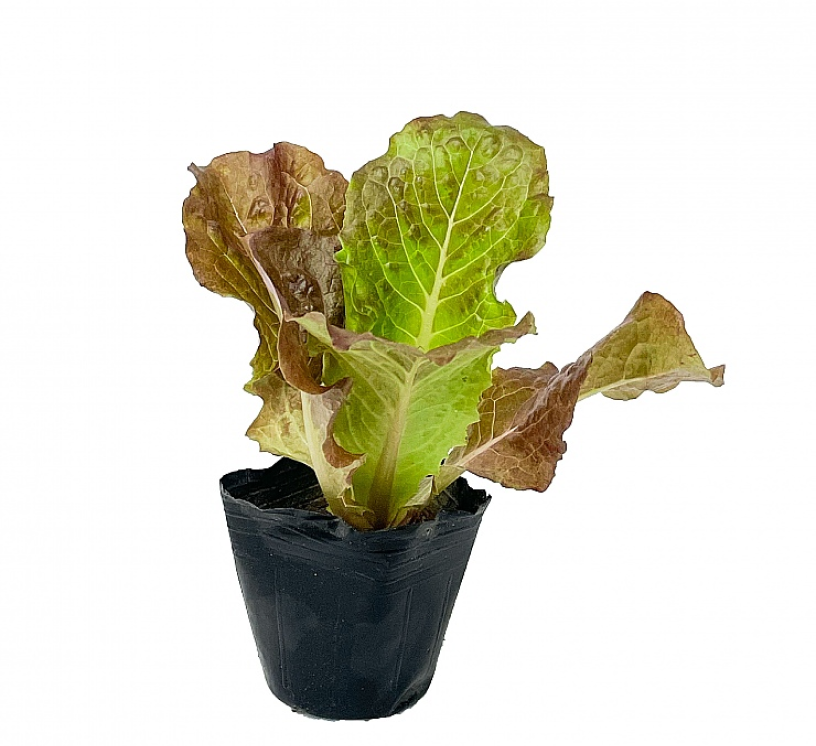
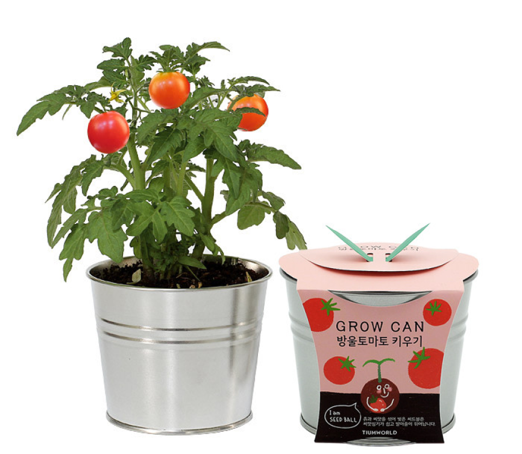

Green-ify
사용자 조사
품종 추천
키우기 가이드
게시판
⋅ 품종추천
⋅ 파키라 ⋅ 율마 ⋅ 상추 ⋅ 방울토마토
품종추천
Recommendation
여러가지 다른 종류의 식물을 추천해드립니다.
파키라
식물 소개
파키라
파키라는 추천 식물 중 미세먼지 제거 효과가 가장 높습니다. 파키라의 잎이 커질수록 공기 정화 효과는 높아집니다.
관리를 잘해서 잔뿌리 양이 많아지면 공기 정화 효과는 더욱 좋아집니다. 뿌리에 사는 미생물이 나쁜 물질을 없애기 때문입니다.
습도 음이온 발생량이 많아 천연 가습기로도 좋은 식물입니다.
키우는 방법
물 주기
겉흙이 마르면 화분 밑으로 흘러내릴 정도로 충분히 주는데 겉흙이 마르고 2~3일 후에 주는 게 좋습니다.
빛 / 온도
반양지 / 온도 20~25℃, 최저 5~7℃ 유지
참고 사항
건조할 때는 잎에 물을 자주 뿌려주고, 습할 때는 환기를 자주 해주세요.
율마
식물 소개
율마
율마, 향나무, 흑백나무, 삼나무 모두 비슷한 종류이지만 율마만 실내에서 기를 수 있고,
작지만 향이 좋고 미세먼지 제거 능력이 우수한 식물입니다.
잎을 쓰다듬어주면 율마 특유의 향을 느낄 수 있습니다.
유럽에선 오일 채취와 원예치료에 활용하고 일본에서는 전나무 대신 크리스마스트리로 사용하는데
모양을 잘만 다듬으면 토피어리(Topiary, 식물을 자르고 다듬어 보기 좋게 만드는 기술)로도 활용할 수 있습니다.
키우는 방법
물 주기
항상 물이 마르지 않도록 물을 충분하게 주세요.
빛 / 온도
양지 / 온도 생육적온 15~20℃, 월동 온도 0 ℃
참고 사항
공기 순환이 잘 되고 햇빛이 잘 드는 곳에 두세요.
상추

식물 소개
상추
잎이 많은 녹색 채소로 저칼로리, 높은 수분 함량으로 알려져 있습니다.
섬유질, 비타민 A, C, K, 칼륨과 같은 미네랄이 풍부합니다.
번식이 잘 되는 편으로 집에서 키우기 쉽고 인기가 많습니다.
키우는 방법
물 주기
봄, 가을에는 3~5일 간격, 여름에는 2~3일에 한번씩
빛 / 온도
양지 / 15~20℃
참고 사항
상추는 서늘한 기후를 좋아하며, 토양이 건조하지 않도록 수분관리를 잘 해야 합니다.
방울토마토

식물 소개
방울토마토
붉은 색을 띠는 작고 동그란 형태의 토마토로, 과채류에 속한다.
비타민A 함량이 일반 토마토보다 2배 이상 높고, 철분, 칼슘, 아연 식물성 섬유 등 비타민과 미네랄 함유량도
일반 토마토보다 소량 높습니다.
방울토마토는 상대적으로 재배가 쉽고 작은 공간에서도 키울 수 있어 집에서 가꾸기에 좋은 식물입니다.
키우는 방법
물 주기
2~3일에 한번씩 물을 꼼꼼하게 충분히 주세요.
빛 / 온도
양지 / 20~27℃
참고 사항
공기 순환이 잘 되고 햇빛이 잘 드는 곳에 두며, 필요한 경우 지지대가 도움이 됩니다.
Green-ify
한양대학교 ERICA 멋쟁이사자들 11기 | 우리들의 아이디어톤 4팀
김혜원 남윤진 음상훈 정해림